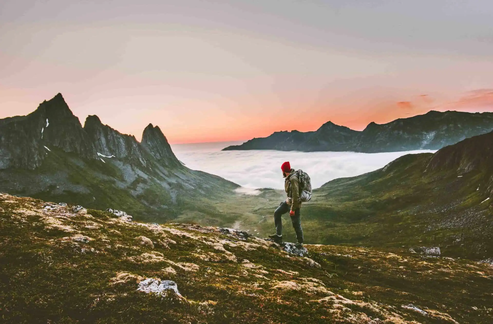
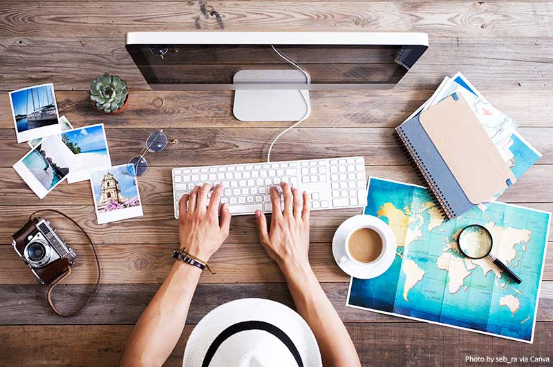

İlk Kez Tek Başına Seyahate Çıkacaklara Tavsiyeler
Tatil yapmak, geziye çıkmak ve merak ettiğiniz yerleri keşfetmek kulağa her zaman çok heyecan verici geliyor.
Bazen arkadaşlarımızla bazen sevgilimizle bazen de ailemizle yaptığımız geziler her ne kadar çok keyifli olsa da, en az bir o kadar keyifli olan bir başka şey daha var. O da tek başımıza seyahate çıkmak.
Yepyeni yerler keşfetmek ya da daha önce keşfettiğiniz yerleri bir daha keşfetmek istiyorsanız tek ihtiyacınız bir bavul ve kendiniz.

Tek başına seyahat etmenin insana verdiği muhteşem özgürlük hissi yapılan seyahati kesinlikle çok daha değerli hale getiriyor. Gezdiğiniz yer, ilk kez gittiğiniz bir ülke ya da daha önce birkaç kez gittiğiniz bir şehir dahi olsa tek başınıza seyahat ettiğinizde gittiğiniz yer bambaşka bir hal alıyor.
Çok başka şeyler görüyor ve çok başka şeyler hissediyorsunuz.
Çünkü bir yerde seyahat ederken yalnızca gittiğiniz yeri değil kendinizi de keşfetme şansınız oluyor.
Çok değerli ve çok keyifli bu deneyimi yaşamak ise bazen göz korkutucu olabiliyor. Tek başınıza çantanızı alıp uzaklara gitmek göz korkutsa dahi bir kez yapanın kesinlikle bir daha yapmak isteyeceği kadar keyif veren bir etkinlik.
Tamamen kendi planlarınızı yaptığınız, tamamen kendi seçtiğiniz yerlere gittiğiniz bu geziler size pek çok katkıda da bulunacaktır.
Siz de tek başınıza seyahate çıkmak istiyor ama nasıl yapacağınızı bilemiyorsanız size bu yolda ışık olacak tavsiyeler hazırladık. Tek başınıza seyahat ederken nelere dikkat etmeniz gerektiği ile ilgili detaylı bir rehber olan bu yazımızdan sonra içinizdeki gezgin ile el ele tutuşabilir ve güzel bir geziye çıkabilirsiniz.
1) Araştırma Yapın

Tek başınıza bir seyahate çıkmak istiyorsanız ilk yapmanız gereken araştırma yapmak. Nereye gitmek istediğinize veya ilk kez tek başına seyahat için nerenin uygun olabileceğine karar vermek için güzel bir araştırma yapmanız gerekiyor. Aklınıza ilk gelen yere gitmektense biraz araştırma yaparak tek başınıza daha rahat gezebileceğiniz bir yer bulmak, gezinizi çok daha keyifli hale getirecek bir adım olabilir.
Nereye gideceğiniz ile ilgili araştırma yaptıktan sonra yapabileceğiniz diğer hamle ise gitmek için tercih ettiğiniz yerin detaylarını incelemek. Gezilecek yerlerini, en güzel restoranlarını ve neyi ile meşhur bir yer olduğunu araştırın. Bunların yanında gideceğiniz yerin lokal mekanlarını da araştırın. Böylece geziye başladığınızda nerelere gidebileceğiniz ile ilgili daha net fikirleriniz olur. Ek olarak eğer yurt dışında bir şehire gidiyorsanız ülkeye giriş şartlarını da araştırmanızda ve vaktinde gerekli işlemler için aksiyon almanızda fayda var.
Araştırmanız gereken diğer bir önemli nokta ise yolculuk. Gitmek istediğiniz yer yurt dışında da olsa kendi ülkenizde de olsa nasıl ulaşım sağlayabileceğinizi öğrenin. Böylece yolculuk yapmanın ekonomik yollarını da araştırmış olursunuz. Fakat ekonomik yolculuk yapmak için kalitesiz ve güven uyandırmayan yollara kesinlikle başvurmayın. Tek başınıza yolculuk ederken kesinlikle dikkat etmeniz gereken en önemli unsurlardan biri güvenlik. Bu yüzden kalitesinden emin olduğunuz firmalarla seyahat etmeye özen gösterin.
2) Plan Yapın
Güzel ve detaylı bir araştırmadan sonra pek çok şey netleşti. Artık nereye gideceğinizi, nereleri gezebileceğinizi ve nerede ne yiyebileceğinizi biliyorsunuz. Şimdi ise sıra plan yapmakta. Bu geziyi ne zaman yapmak istediğinize, hangi ulaşım şekliyle yolculuk yapacağınıza ve ne kadar süreyle kalacağınıza karar vererek plan yapın. Planlı olmak gezinizi daha kolay bir hale getirir ve sizi karmaşalardan kurtarır.
Plan yaptıktan sonra bu planı yakınlarınızla paylaşabilirsiniz. Böylece yakınlarınız sizin planlarınıza dair fikir sahibi olur. Tek başına seyahat ederken dikkat etmeniz gereken noktanın güvenlik olduğunu söylemiştik. Planlarınızın yanı sıra kalacağınız yerin bilgilerini, telefon numaralarını ve adresini de yakınlarınıza vermenizde ve herhangi bir değişiklikte yakınlarınızı bilgilendirmenize fayda var.
3) Nerede Kalacağınıza Karar Verin
Gezi sırasında konaklama için pek çok seçenek bulunuyor. Lüks otellerden çadıra kadar herkese hitap eden konaklama yerleri bulmak mümkün. Burada önemli olan ise sizin konaklama sırasında rahat hissediyor olmanız. Örneğin çadır. Maddi anlamda çoğu konaklama seçeneğine göre uygun olsa dahi eğer daha önce kamp yapma ve çadırda kalma gibi bir tecrübeniz yoksa çadır seçeneği ilk yalnız tatilinizde sizi oldukça zorlayabilir. Çok lüks oteller bütçeniz yetmese dahi orta dereceli otellerde veya hostellerde konaklama yapabilirsiniz.
Konakladığınız yerin güvenli ve bilinir bir yer olmasına dikkat etmenizde ise büyük fayda var. Konaklama için kullandığınız sitelerin güvenilir olması konusunda titizlik gösterin. Eğer online rezervasyon yapacaksanız, rezervasyonu da bilindik ve güvenilir bir site üzerinden yapmaya özen gösterin.
4) Bavulunuzu Özenle Hazırlayın
Pek çok önemli detay hakkında karar verdiğinize ve aksiyon aldığınıza göre artık bavulunuzu hazırlama vakti. Yalnız olacağınızı kendinize hatırlatın ve çok fazla eşya almaktan kesinlikle kaçının. Gittiğiniz yerin hava durumuna göre gerekli olan temel eşyalardan oluşan bir bavul hazırlayın. Kullandığınız bavulun kendi ağırlığının çok olmaması bavulu daha rahat taşımanıza yardımcı olabilir. Ayrıca kullandığınız bavulun sağlam olmasına dikkat edin. Yarı yolda bavulun bozulması keyfinizi kaçırabilir. Bavulun yanı sıra çok uzun olmayan bir gezi planlıyorsanız spor çantası gibi büyük çantalar kullanmayı da tercih edebilirsiniz.
ÖNERİMİZ:
Bavulunuzu yerleştirirken internetten pratik ve az yer kaplayan bavul yerleştirme tekniklerine bakabilirsiniz. Böylece pratik ve hızlı bir şekilde hem de bavula daha çok eşya koyarak bavulunuzu ya da çantanızı hazırlayabilirsiniz.
5) Gezi Sırasında Kullanabileceğiniz Uygulamaları Araştırın
Özellikle yurt dışına yapılan seyahatlerde oldukça önemli olan bir unsur da gezi sırasında yararlanabileceğiniz uygulamaları bulup kullanmak. Online olarak kullanacağınız haritalar ve bazı farklı uygulamalar ile yurt dışına yaptığınız gezilerinizde kaybolma ya da iletişim kuramama gibi olumsuzluklar yaşamaktan korunabilirsiniz.
Öncelikle yurt dışında Türkiye’de kullandığınız hattınızı kullanmanızı kesinlikle tavsiye etmiyoruz. Çünkü bu size oldukça pahalıya mâl olabilir. Bunun yerine yurt dışında hattınızı kullanmak için bazı tarife anlaşmaları yaparak kendi telefon hattınızı kullanmaya devam edebilirsiniz.
Fakat bu seçenek özellikle kısa süreli geziler için uygun bir seçenek olmayabilir. Bunun yerine kısa süreli seyahatler için başka bir seçenek olarak Airalo gibi uygulamalar kullanabilirsiniz.
Airalo ve benzeri uygulamalar telefonunuza indirdikten sonra birçok ülkede kullanabileceğiniz bir e-sim görevi görür. Her ne kadar bu e-sim ile sadece internet kullanabiliyor olsanız da Whatsapp gibi uygulamalar sayesinde internet üzerinden yakınlarınız ile görüşmenizi sağlıyor. Bu tarz uygulamalar özellikle kısa geziler için oldukça yeterli. Sadece internet satın alabildiğiniz bu uygulamayı kullanmak ise oldukça kolay. Uygulama indirildikten sonra kendisi sizi nasıl kullanılacağı konusunda yönlendirecek.
Diğer edinmeniz gereken uygulamalar konusunda daha fazla fikir sahibi olmak istiyorsanız
tıklayınız.
6) Dakik Olun
Dakik olmak hayatın geneli için oldukça önemli. Ama özellikle tek başınıza seyahat ederken çok daha önemli oluyor. Çünkü uçak ve otobüs gibi ulaşım araçlarınızı kaçırmanız seyahatinizin başlamadan bitmesine sebebiyet verebilir. Özellikle gideceğiniz yere ulaşmak için kullanacağınız ulaşım araçlarının saatlerine çok dikkat edin ve en az bir saat önceden ulaşım aracına bineceğiniz konumda olun. Böylece herhangi bir aksilik yaşamadan yolunuza devam edebilirsiniz. Gezi sırasında ise yaptırdığınız rezervasyonlara ya da müze gibi yerlerinin kapanış saatlerine karşı hassasiyet göstermeniz planınızın aksamamasına yardımcı olabilir.
7) Gerekli Her Şeyin Yanınızda Olduğuna Emin Olun
Tek başına seyahate çıkmanın en stresli yönlerinden biri gibi görebileceğiniz nokta ise bütün sorumluluğun sizde olması. Yapacağınız her şeyin sorumluluğu tamamen sizde. Almayı unuttuğunuz kimliğinizi anneniz almış olamaz ya da çantaya koymayı unuttuğunuz pasaportu sevgiliniz tesadüfen bulup yanına alamaz. Çünkü bu gezide yalnızca siz varsınız. Tam olarak bu sebepten yola çıkmadan önce yanınızda bulundurmanız gereken her şeyi aldığınızdan emin olun. Yurt dışı gezileriniz için pasaport ve kimlik gibi önemli resmi belgeleri, yurt içindeki gezileriniz için ise kimlik ve bilet gibi gerekli belgelerin yanınızda olduğundan kesinlikle emin olun.
Bunun yanı sıra eğer raporlu kullandığınız ilaçlarınız varsa ilaçlarınızı ve raporlarınızı da yanınıza almanız önemli. İlaçların yanı sıra üstünüzde yeterli olacağını düşündüğünüz miktarda nakit para almayı unutmayın. Fakat burada dikkat etmeniz gereken nokta, yanınızda çok fazla nakit para taşımamak. Herhangi bir hırsızlık olayında bütün paranızın çalınmasını kesinlikle istemezsiniz. Bu yüzden paranızın bir kısmını da kartınızda taşıyın.
Çantanızı ve cüzdanınızı ise güvenli olduğunu düşündüğünüz yerlerde tutmanızda fayda var. Telefon ve cüzdan için ağırlık oluşturmayacak ve sürekli üstümüzde taşıyabileceğiniz küçük çantanın içinde taşıyabilirsiniz. Son olarak ise maddi ve manevi çok değerli eşyalarınızı yanınıza almamanız, eşyaların kaybolma veya çalınma riskini tamamen ortadan kaldıracağı için güzel bir seçenek olabilir.
8) İletişimi Koparmamaya Dikkat Edin
Güzel bir gezi yapacaksınız ve çok heyecanlısınız ama yine de arkada bıraktığınız hayattan kopmayın. Aileniz ve yakınlarınız ile dünyanın neresinde olursanız olun iletişim halinde kalın. Planlarınızı ve kalacağınız yer ya da yerlerin adreslerini yakınlarınıza vermenizin önemli olduğunu zaten söylemiştik. Yakınlarınız ile düzenli iletişim kurmak ve onlara tatil süresince yaptığınız plan değişiklerinden bahsetmek hem sizi hem de sizi sevenleri güvende hissettirecektir.
9) Lokal Mekanları Keşfedin
Gezmenin en keyifli olan kısmı ise tabi ki lokal yerleri keşfetmek. Turistik mekanları gezmek ve çok bilindik restoranlarda oturmak da tabi ki bir yeri keşfetmek için yapılması gereken şeylerden. Fakat bunların yanında lokal küçük kafelerde kahve içmek, butik mağazalardan alışveriş yapmak ve gittiğiniz yerlere özgü yemekleri yapan yerel işletmelerde vakit geçirmek ve buralarda tam bir yerli halk gibi yaşamak da ayrı bir zevkli.
Lokal yerleri keşfederek hem bulunduğunuz yeri hem de oranın insanlarını daha iyi tanıma şansına sahip olabilirsiniz. Farklı kültürler tanımak, farklı insanlarla tanışmak ve yeni şeyler denemek için harika seçenekler olan lokal yerlerde öğrenebileceğiniz pek çok şey olabilir.
10) Yemeklere Dikkat Edin
Lokal yerlerde vakit geçirin ve gittiğiniz yere özel tatları deneyin tabi ki ama aynı zamanda da dikkatli olun. Size daha önce dokunmuş veya alerjiniz olan yemeklere ya da bu tarz malzemeler içerebilecek yemeklere dikkat edin. Çünkü özellikle ilk kez yalnız gittiğiniz tatilde hasta olmak istemezsiniz. Bu tarz durumlarda kendi kendinizle ilgilenmeniz gerektiği için ekstra dikkatli olmakta ve tedbir almakta fayda var.
Ek olarak bozulmuş yemeklere karşı da dikkatli olmanız önemli. Hiç fark etmeden zehirlenebilirsiniz ve bu tatilinizin kötü bir sonla bitmesi anlamına gelebilir. Çabuk bozulan gıdalar yemekten uzak durmanın yanı sıra güven uyandırmayan ve temiz görünmeyen yerlerde kesinlikle yemek yemeyin.
11) Deneyimleyin ve Tadını Çıkarın!
Tek başınıza geziye çıkmak gözünüzü korkutuyor veya çok fazla detayda kaybolmak gibi geliyor olabilir. Ama kesinlikle öyle değil. Çünkü bir kere bunu başardığınızda aslında kendinizle birlikte dünyayı keşfetmek için küçük adımlar atmanın ne denli değerli ve zevkli olduğunu anlıyorsunuz. Bu yüzden tek başınıza seyahat etmekten korkmayın. Sadece dikkatli davranarak tek başına seyahate çıkmayı deneyimleyin. Tedbirli olun ama paranoyak olmayın. Tatilinizi başınıza gelebilecek kötü şeyleri düşünerek geçirmeyin. Kendinizi güvende hissetmeniz için gerekli bütün tedbirleri alın ve sonra tatilin keyfini çıkarın.
Şimdiden iyi tatiller dileriz.